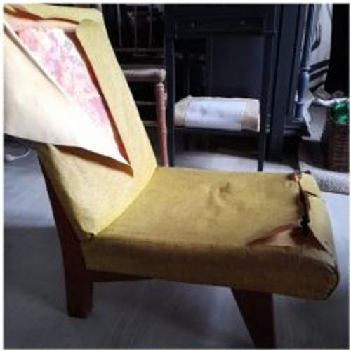
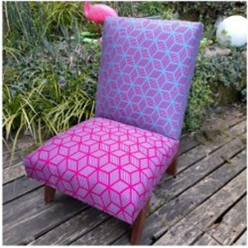
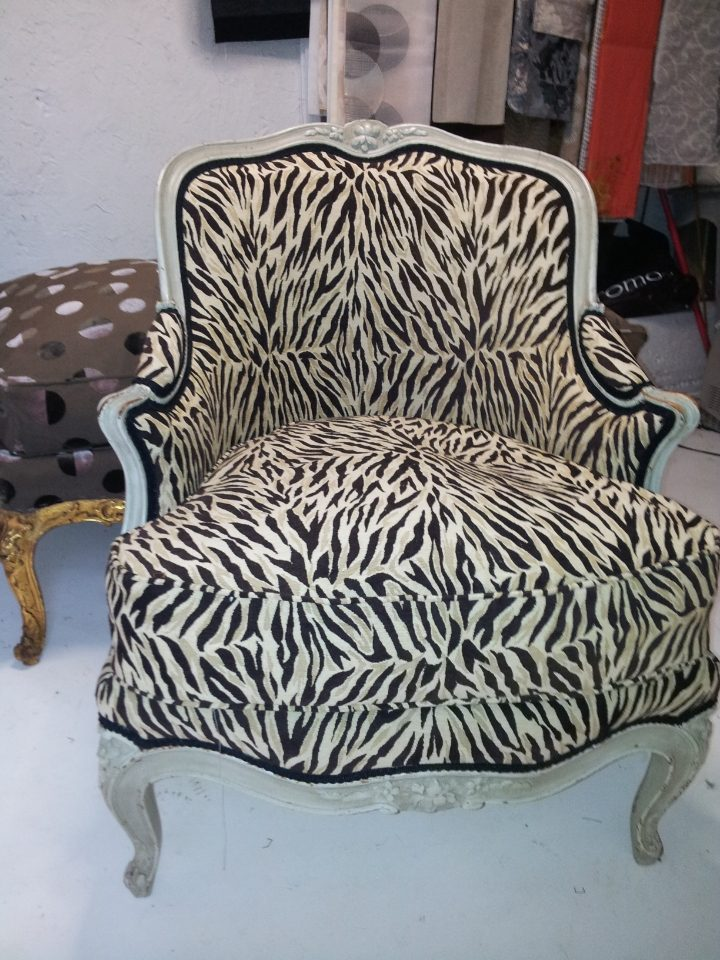
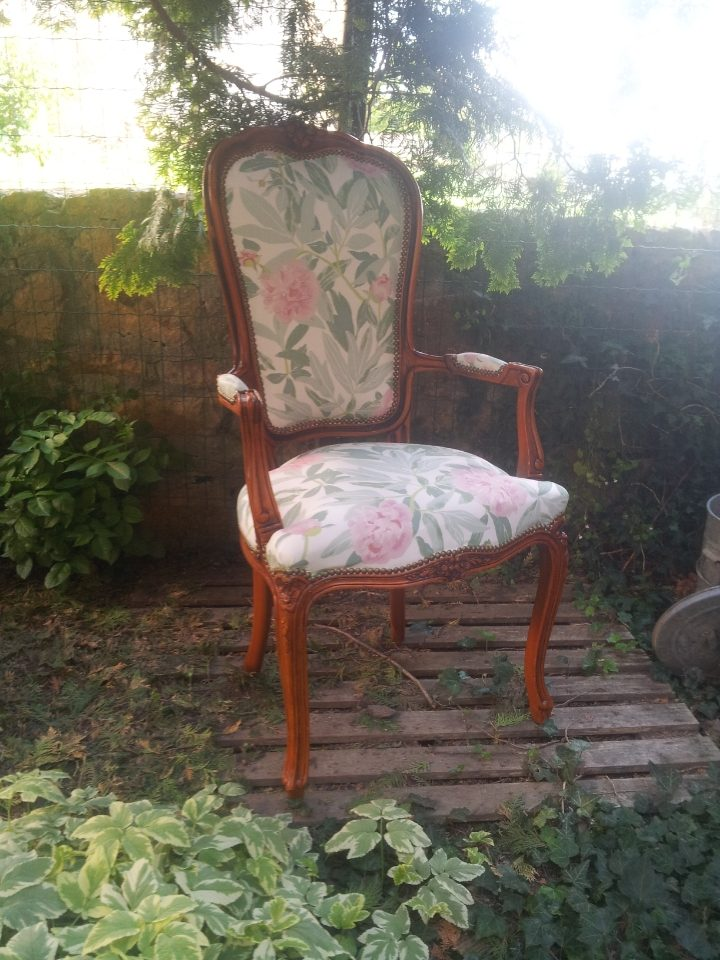
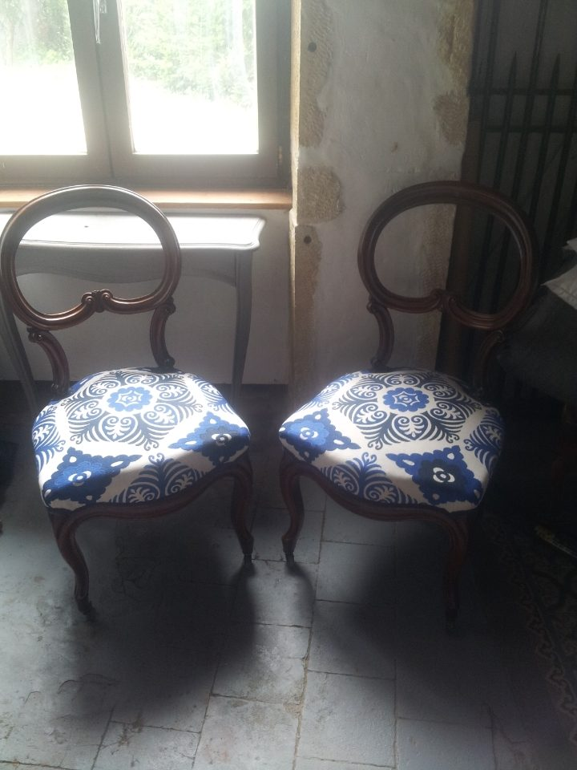
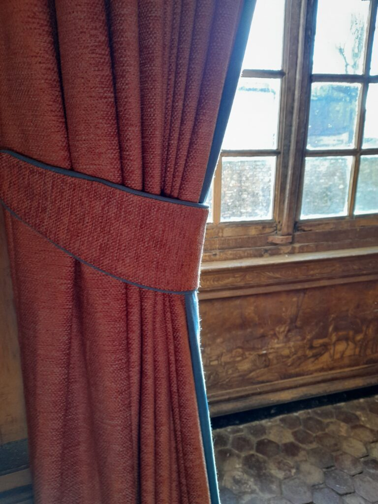
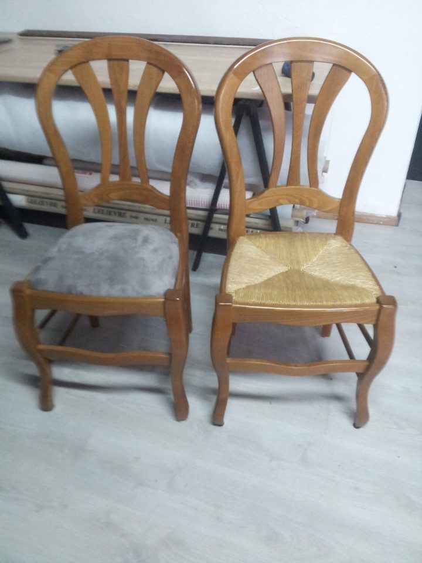
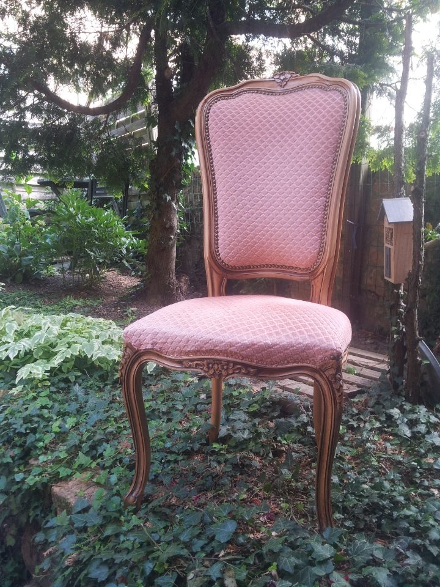

Fauteuils
De la re-couverture à la réfection complète.
Atelier de Juline — Tapissier décorateur à Montagny,
près de Roanne, dans la Loire
Vous cherchez un artisan qualifié pour restaurer vos sièges, confectionner vos rideaux ou refaire votre canapé. Techniques traditionnelles et modernes, pour redonner une nouvelle vie à un siège ancien comme à une création contemporaine.


Avant AprèsLa même chauffeuse, avant et après passage à l’atelier. Faites glisser le curseur — ou utilisez les flèches du clavier.
Artisan tapissier en ameublement, j’utilise des techniques traditionnelles et modernes lors de la réfection, afin de redonner une nouvelle vie à votre ancien siège.
Le savoir-faire de l’atelier permet la réfection de tout type de fauteuils, chaises et canapés : de la simple re-couverture de vos sièges à la réfection complète. Que la restauration de votre siège soit de style d’époque ou d’une création contemporaine, l’accent est mis sur le respect des règles de l’artisanat.
De larges collections de tissus sont disponibles, dans de nombreuses couleurs et finitions, en fonction de votre intérieur et de vos envies.
Un métier appris à l’établi, pratiqué tous les jours à Montagny.
Les collections proposées à l’atelier viennent d’éditeurs français.
Refaire plutôt que jeter, avec des matières choisies dans ce sens.

Au fil des années et des expériences, les services de l’atelier ont évolué.
De la re-couverture à la réfection complète.
Assises, dossiers, galettes, chaises de salle à manger.
Tabourets, poufs, banquettes de piano, chauffeuses.
Y compris les grandes pièces à reprendre entièrement.
Confection sur mesure, doublures, embrasses.
Housses de sièges et de canapés, ajustées à la pièce.
Réfection du cannage traditionnel des sièges anciens.
Moto, voiture, aéronautique, camping-car.
Décrivez votre pièce en quelques clics. Vous obtenez une fiche récapitulative claire, que vous m’envoyez par mail ou dont vous me parlez au téléphone — de mon côté, j’ai tout ce qu’il me faut pour vous répondre sans vous rappeler trois fois.
Des pièces passées par l’atelier. Chaque tissu a été choisi avec la personne à qui appartient le siège.





L’atelier est rue de Roanne, à Montagny, à une vingtaine de minutes de Roanne. On peut y déposer une pièce, ou en parler d’abord au téléphone — souvent, une photo et deux mesures suffisent pour savoir de quoi il retourne.
Les horaires d’ouverture ne sont pas affichés ici : ils n’apparaissaient nulle part publiquement. Ils se remplissent en deux lignes.
Envie de refaire votre ancien fauteuil ? Fort d’un savoir-faire de plus de 20 ans, je me ferai un plaisir de restaurer ou de moderniser vos fauteuils, canapés et rideaux.
Ouvrir le carnet d’atelier